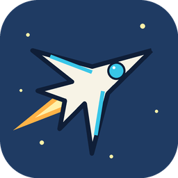

Tiny Tailwind
Fly a little manta-winged ship through the Sunmeadow. Shoot your way past brambly critters, gather coins for Wren's Wagon, find 26 keepsakes and three new weapons, win the dash in Echo Hollow and calm the warden of Thornkeep. Defeat never costs a thing.
Version 0.8.0. Release notes · Backlog


What kind of game is this?
Things to do
- Explore the Sunmeadow and find all 26 keepsakes. The journal keeps count.
- Find the Spread Shot, the Pierce Shot and the Homing Shot. Three Tuning Cores make every weapon stronger.
- Hold the charge button for a big bubble that rolls through every foe in its way.
- Chase your best score. A combo builds as you calm foes in a row. A hit only resets the combo.
- Collect crystals, level up and upgrade Power, Fire rate, Speed and Range.
- Gather coins from enemies, berry bushes, clay pots, cave crystals and trees. Hunt down 10 hidden coin caches.
- Spend your coins at Wren's Wagon in the first glade: hearts, spare parts, a coin magnet, a shield charm, a quicker dash and a treasure map.
- Find three Heart Seeds for more hearts.
- Win the Dash Core in Echo Hollow, then dash across rifts.
- Clear the gated rooms of Thornkeep.
- Calm the warden Thornhull and beat your own best time.
- Fill in the map as you go. A mini map in the corner shows where you have been.
Controls
WASD moves. The mouse aims and the left button fires. Arrow keys also aim and fire. Space or the right button dashes. Hold E for a charged shot. Q or the mouse wheel picks the next weapon. Esc opens Menu.
Left stick or D-pad moves. Right stick aims and fires. A, RB or RT dashes. Hold LT for a charged shot. Y picks the next weapon. View or Menu opens the Menu. In menus the D-pad or left stick moves, A chooses and B goes back.
Left thumb moves. Right thumb aims and fires. Dash, Charge and Swap buttons on the right. Menu at the top right. Menu, then How to play lists every control.
Play with an Xbox controller
Any Xbox Wireless Controller with Bluetooth works. That is every Series X|S controller and the Xbox One controllers made since 2016. If the plastic around the Xbox button matches the face of the controller, it has Bluetooth. Other controllers that your phone or browser sees as a standard gamepad use the same buttons. You can play the whole game with the controller alone.
- Left stick or D-pad: move.
- Right stick: aim and fire.
- A, RB or RT: dash, once you have the Dash Core.
- LT: hold for a charged shot, let go to fire.
- Y: next weapon.
- View or Menu: open and close the Menu.
- D-pad or left stick: move between menu buttons.
- A: choose. B: go back.
- Hold the Xbox button to turn the controller on.
- Hold the small Pair button on top for 3 seconds, until the Xbox button flashes fast.
- On your phone, open Settings, then Connected devices, then Pair new device.
- Tap Xbox Wireless Controller. The Xbox button stays lit when it is connected.
- Open Tiny Tailwind. The touch controls hide as soon as you use the controller.
- Connect the controller to your computer with a USB cable or Bluetooth.
- Open Play in your browser. Chrome, Edge, Firefox and Safari all work.
- Press any button once after the game loads, so the browser sees the controller.
- In a browser these handhelds often switch the sticks to Desktop mode, where they act as a mouse and keyboard.
- Open Command Center and set Control Mode to Gamepad.
- Press any button. The title card then names the controller it sees.
Install on Android
- Tap Download for Android on this page.
- Open the file. Allow installs from your browser if your phone asks.
- Tap Install, then Open.
Android may show a Play Protect notice for apps from outside the Play Store. Version 0.8.0 installs over the last version and keeps your saves.
Feedback wanted
- How moving, aiming and dashing feel.
- How each weapon and the charged shot feel. Which one you kept using.
- Whether enemies and the warden are too easy or too hard.
- Where you got lost or stuck.
- Anything that looks wrong, with a screenshot.
- Your phone, controller or browser.